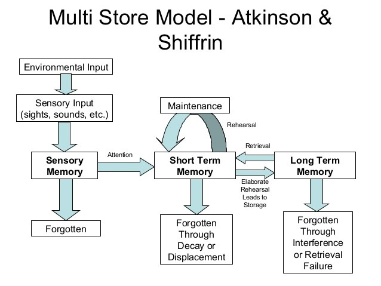

We often think of human memory like a video camera recording perfect footage of our lives that we can just rewind and watch later. But memory doesn't work like that at all. It is highly selective, constantly changing, and constructed in three primary stages: getting the information in (encoding), holding onto it over time (storage), and getting it back out when you need it (retrieval). Let's dive into how information travels from the outside world into the permanent archives of your brain.
According to this classic model, for a memory to become permanent, it must successfully pass through three distinct systems:

The Multi-Store Model of Memory. This classic framework illustrates how our brains process information, moving it from fleeting sensory input into short-term working memory, and eventually securing it in long-term memory. If this looks like a lot to take in, don't worry—you will explore the specific mechanisms of encoding, storage, and retrieval in detail during the next few topic overviews! Source Wikimedia Commons.
Modern psychologists realized that "short-term memory" wasn't just a passive waiting room. It's actually a highly active, scratchpad-like system where your brain constantly juggles new information with old memories to solve problems. We now call this Working Memory.
Your working memory is managed by a "boss" called the Central Executive, which directs your attention and manages cognitive tasks. To help it process information, the central executive uses sub-systems like the visuospatial sketchpad (which temporarily stores and manipulates visual maps and shapes in your mind's eye) and the phonological loop (which handles auditory rehearsal, like repeating a phone number to yourself).
Note: This video includes vocabulary and concepts from both Topic 2.3 and Topic 2.4!
How hard you think about something determines how well you remember it. Some information, like what you ate for lunch or the route you took to school, skips the line and goes straight into memory without you even trying. This is automatic processing. But studying for your AP Psychology exam requires effortful processing—deliberate attention and conscious work.
The Levels of Processing Model suggests that memory depends on the depth of your encoding:
Once a memory makes it into long-term storage, it is sorted into different categories based on how it is retrieved:
Finally, we have Prospective Memory, which isn't about remembering the past at all! It's the memory of remembering to do something in the future (e.g., remembering to take your vitamins before you go to bed tonight).
Memories are not stored in a single "memory box" in your brain; they are stored in the complex webs of neurons communicating with each other. When you learn something new and practice it repeatedly, the synaptic connections between those specific neurons become stronger and more efficient at firing. This biological process is called Long-Term Potentiation (LTP). As neuroscientists like to say: "Neurons that fire together, wire together."
⚠️ Short-Term vs. Working Memory: While often used interchangeably, remember the distinction! Short-term memory simply refers to the brief storage capacity. Working memory refers to the active manipulation of that information to solve a problem.
⚠️ Episodic vs. Semantic Memory: An easy way to remember the difference: Episodic sounds like "Episode" (as in, an episode of a TV show starring YOU as the main character). Semantic means "meaning" (as in, the factual meaning of words and concepts).
Ensure these fundamental memory concepts are locked in by practicing with our review tools: